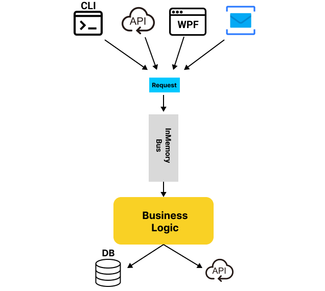

class: center,middle # Integration testing --- # Challenges Maintain test infrasturcute Ensuring databases up and running Problem with parallelism In-memory database is not enough --- class: middle, center # <span class="orange-bg"> What is the solution?</span> --- <div> </div> OS library Programmatic and throwaway instances of - databases - message brokers - web-browsers - anything that run in a docker Testing code with real dependencies --- # Testcontainers <div style="text-align: center;"> <img src="./assets/test-containers.png" alt="Example Image" style="width:550px;"> </div> --- class: middle, center # Demo time --- class:middle, center #CQRS ##Command and Query Segregation Principle --- # Web App characteriscs <div style="text-align: center;"> <img src="./assets/vsa-web-app-char.png" alt="Example Image" style="width:600px;"> </div> --- # CQRS Command and Query Segregation Principle Two models: read and write Separation of Concerns <div style="text-align: center;"> <img src="./assets/vsa-cqrs.png" alt="Example Image" style="width:400px;"> </div> --- # Why CQRS? <div style="text-align: center;">  </div> --- # VSA + CQRS Commands and Queries are first class citizens Only way to communicate with business logic Simple Model For Requests <div style="text-align: center;"> <img src="./assets/vsa-request-model.png" alt="Example Image" style="width:600px;"> </div> --- # VSA + CQRS <div style="text-align: center;"> <img src="./assets/vsa-cqrs-together.png" alt="Example Image" style="width:600px;"> </div> --- class: middle, center # <span class="green-bg">How to do VSA in .NET?</span> --- # Modelling requests in .NET Mediator pattern ❌ MediatR library: - inproces messaging library with pub/sub support ✅ Wolverine: Advanced messaging and orchestration framework - Mediator pattern - CQRS - Durable queues - and much more --- # Modelling requests in .NET <div style="text-align: center;"> <img src="./assets/vsa-request-model-net1.png" alt="Example Image" style="width:600px;"> </div> --- # Modelling requests in .NET <div style="text-align: center;"> <img src="./assets/vsa-request-model-net2.png" alt="Example Image" style="width:600px;"> </div> </div> --- # Modelling requests in .NET ``` public class GetAllProductsQuery { } ``` ``` public class GetProductQuery { public Guid Id { get; set; } } ``` ``` public class SearchForProductsQuery { public String Name { get; set; } public decimal Price { get; set; } public bool IsOnDiscount { get; set; } } ``` --- # Modelling requests in .NET ``` public class ActivateDiscountsCommand { } ``` ``` public class CreateProductCommand { public string Name { get; set; } public string Description { get; set; } public decimal Price { get; set; } } ``` --- # Modelling responses in .NET ``` public class Response { public Guid Id { get; set; } public string Name { get; set; } public string Description { get; set; } public decimal Price { get; set; } } ``` --- class: middle, center # Showtime ---